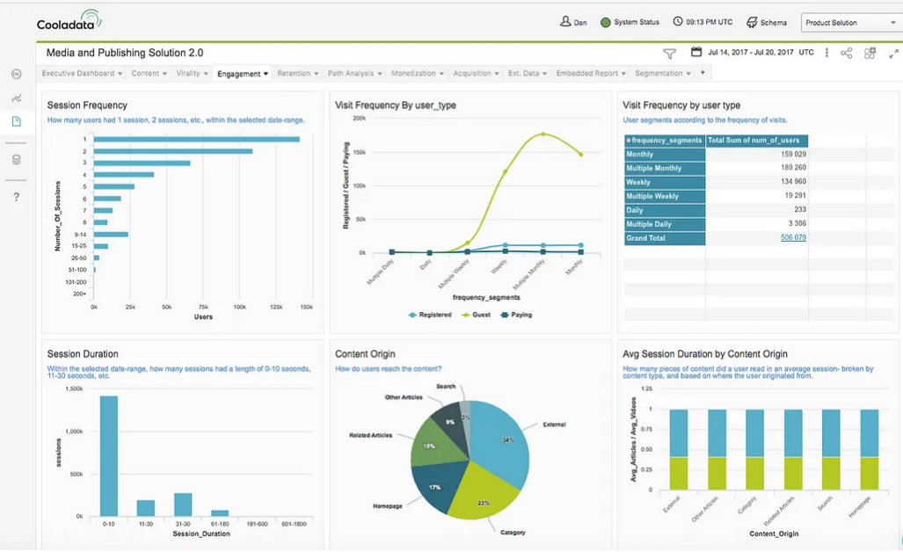
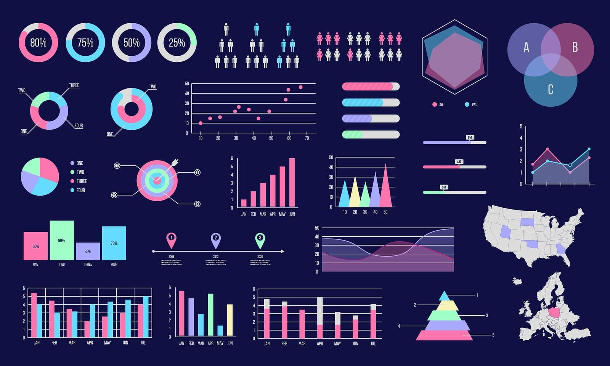

Projects

SaaS Metrics Dashboard
MRR, Signups, DAU/MAU trends using Power BI.

Sales Performance Report
Channel-wise and state-wise sales tracking with filters.

Stylish Analytics Dashboard
Custom dark-themed Power BI dashboard with global data points.